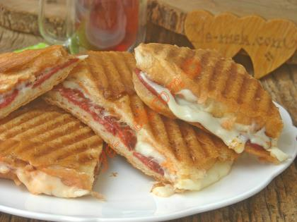

Toast Recipe

A delicious cheese and sujuk toast
Dont forget to wait your toaster warm up before taking action.
Ingredients
- 2 slice of toast bread
- 2 slices cheese of any kind
- 4 slices of turkish style fermented sausage
- 2 tomatos
Steps
- Heat up the toaster good.
- prepare 2 slice of bread and cheese and 4 slices of sujuk.
- Cover the toast bread and slightly pressure the breads.
- Use some butter on the bread and cook until cheese become a little fluid like.
Slice the tomatos however you like. Have a good meal